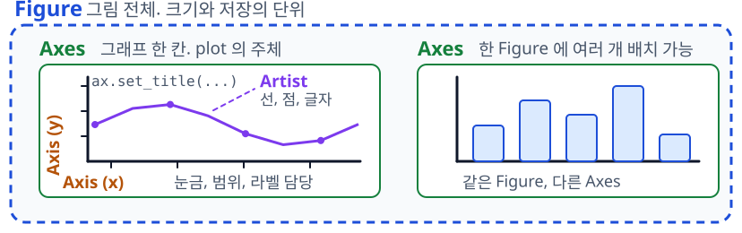

Matplotlib
다양한 그래프 그리기
충북대학교 지능로봇공학과 문성태 교수
What is Matplotlib
파이썬에서 그림을 코드로 그리게 만든 라이브러리
Who
- John D. Hunter — 2003년 공개. 뇌파 데이터 확인 목적으로 개발
- 목표 — MATLAB 없이 동등한 품질의 그림 생성
- 지금 — NumFOCUS 후원, BSD 호환 라이선스
Why
- 재현성 — 그림이 코드로 남아 언제든 재생성 가능
- 제어 — 축, 눈금, 색을 항목 단위로 지정
- 출력 — 화면, PNG, PDF, SVG 로 같은 그림
Where
- 기반 — pandas.plot, seaborn 의 내부 엔진
- 현장 — 논문 그림, 실험 리포트, 센서 로그 확인
- 사례 — 화성 탐사 로버 데이터, 블랙홀 영상 공개 그림
버전 — 3.x 가 현재 계열. 본 강의는 3.8 이후 기준
그림의 구조
Figure 안에 Axes, 그리는 주체는 언제나 Axes

- Figure — 그림 전체. 크기와 저장의 단위
- Axes — 그래프 한 칸. plot 의 주체
- Axis — x축, y축. 눈금, 범위, 라벨 담당
- Artist — 선, 점, 글자 등 그려지는 모든 것
- 이름 주의 — 축은 Axis, Axes 는 그래프 칸
fig, ax = plt.subplots(figsize=(6, 3)) ax.plot(t, temp) ax.set_title("Figure has one Axes")
두 가지 사용법
같은 그림을 그리는 두 가지 방식
# 상태 기반 (pyplot) plt.plot(t, temp) plt.xlabel("time") # 객체지향 (권장) fig, ax = plt.subplots() ax.plot(t, temp) ax.set_xlabel("time")
- 상태 기반 — 현재 그림에 이어서 그리기. 짧은 확인용
- 객체지향 — fig, ax 객체를 지정해 그리기
- 이유 — 서브플롯이 늘면 상태 기반은 대상 추적 곤란
- 규칙 — 본 강의는 fig, ax 방식 사용
이름 규칙 — pyplot 은 xlabel, Axes 는 set_xlabel. Axes 메서드에 set_ 접두
첫 그래프
세 줄로 끝나는 최소 구성
fig, ax = plt.subplots(figsize=(6, 3)) ax.plot(t, temp) fig.savefig("first.png", dpi=120) import os os.path.getsize("first.png") # 바이트
- subplots — Figure 와 Axes 를 동시에 생성
- figsize — 인치 단위 (가로, 세로)
- savefig — 파일로 저장. 화면 없이 동작
- show — 창 표시. 스크립트에서는 마지막에 한 번만
선 스타일과 마커
선 하나에 지정하는 색, 모양, 두께, 투명도
fig, ax = plt.subplots(figsize=(6, 3)) ax.plot(t[:60], temp[:60], color="tab:blue", linestyle="--", linewidth=2, marker="o", markersize=4, alpha=0.8)
- color — 이름, tab:blue, #1f77b4 모두 가능
- linestyle — "-", "--", ":", "-."
- marker — "o", "s", "^", "x"
- alpha — 0 투명, 1 불투명. 겹칠 때 유용
축약형 — "r--o" 처럼 결합 가능. 길어지면 가독성 저하
축과 제목
읽는 사람에게 필요한 정보는 축 이름과 단위
fig, ax = plt.subplots(figsize=(6, 3)) ax.plot(t, temp) ax.set_title("Temperature") ax.set_xlabel("time [s]") ax.set_ylabel("temp [C]") ax.set_xlim(0, 8) ax.grid(True, alpha=0.3)
- set_title — 그래프 제목. 슬라이드 제목과 겹치지 않게
- set_xlabel — 단위는 대괄호로 병기
- set_xlim — 표시 구간 제한
- grid — 값을 읽어야 하는 그림에만 사용
범례와 여러 선
선이 둘 이상이면 label 과 legend 필수
fig, ax = plt.subplots(figsize=(6, 3)) ax.plot(t, temp, label="temp") ax.plot(t, hum, label="humidity") ax.legend(loc="upper right")
- label — 각 plot 에 이름 부여
- legend — label 이 있는 것만 모아 표시
- loc — "best", "upper left" 등으로 위치 지정
- 색 순환 — 미지정 시 기본 색이 순서대로 배정
단위가 다르면 — 한 축에 겹치면 오해 유발. 트윈 축 또는 서브플롯 사용
연습문제 1
시간축 t 에 대해 temp 와 hum 을 같은 Axes 에 그리시오. x축 이름 t, y축 이름 value, 두 선의 범례를 붙이고 앞쪽 100개 샘플만 보이게 한다.
fig, ax = plt.subplots(figsize=(6, 3)) # IMPLEMENT HERE
주어진 배열 — t (400,) 0 부터 4파이까지의 시간축 · temp (400,) 온도 · hum (400,) 습도. 셋 다 같은 길이, 같은 인덱스로 대응한다
산점도
두 변수의 관계 확인은 선이 아니라 점
fig, ax = plt.subplots(figsize=(6, 3)) sc = ax.scatter(temp, hum, c=t, s=12, cmap="viridis", alpha=0.7) fig.colorbar(sc, ax=ax, label="time [s]")
- s — 점 크기. 배열을 주면 점마다 다르게
- c — 색. 값 배열을 주면 세 번째 변수를 표현
- cmap — 색 지도. viridis 는 흑백 인쇄에도 안전
- colorbar — 색이 뜻하는 값의 눈금
막대와 히스토그램
범주는 막대, 분포는 히스토그램
fig, ax = plt.subplots(1, 2, figsize=(7, 2.6)) ax[0].bar(place, counts, color="tab:orange") ax[1].hist(err, bins=30, color="tab:blue")
- bar — 범주별 값. 가로 막대는 barh
- hist — 값을 구간으로 세어 분포 확인
- bins — 구간 수. 과도하면 계단이 잘게 쪼개짐
- density=True — 개수 대신 비율로 정규화
고르는 기준 — 항목 사이에 순서가 없으면 막대, 값의 퍼짐을 보려면 히스토그램.
서브플롯
그림 한 장에 여러 그래프를 격자로 배치
fig, ax = plt.subplots(2, 2, figsize=(7, 4)) ax[0, 0].plot(t, temp) ax[0, 1].hist(err, bins=20) ax[1, 0].scatter(temp, hum, s=6) ax[1, 1].bar(place, counts) fig.tight_layout()
- subplots(2, 2) — ax 는 2차원 배열
- 인덱싱 — ax[행, 열] 로 각 칸 선택
- 1행이면 — ax 는 1차원. ax[0], ax[1]
- tight_layout — 라벨이 겹치지 않게 간격 조정
연습문제 2
1행 2열 서브플롯을 만들어 왼쪽 칸에는 지점별 counts 를 막대로, 오른쪽 칸에는 err 의 분포를 히스토그램(bins=30)으로 그리시오.
fig, ax = plt.subplots(1, 2, figsize=(9, 3)) # IMPLEMENT HERE
주어진 배열 — place (4,) 지점 이름 A, B, C, D · counts (4,) 지점별 관측 수 · err (500,) 오차 표본. 두 칸은 ax[0], ax[1] 로 접근한다
축 공유와 트윈 축
시간축 공유, 또는 단위가 다른 값의 중첩 표시
fig, ax = plt.subplots(figsize=(6, 3)) ax.plot(t, temp, color="tab:red") ax.set_ylabel("temp [C]") ax2 = ax.twinx() ax2.plot(t, hum, color="tab:blue") ax2.set_ylabel("humidity [%]")
- twinx — x 공유, y 축 하나 추가
- 색 맞추기 — 축 라벨 색을 선 색과 일치시켜 가독성 확보
- 주의 — 두 y축은 오해를 부르기 쉬우니 꼭 필요할 때만
채우기와 오차 표시
값 하나가 아니라 범위를 보여야 하는 경우
m = temp.reshape(20, 20).mean(axis=1) s = temp.reshape(20, 20).std(axis=1) x = np.arange(m.size) fig, ax = plt.subplots(figsize=(6, 3)) ax.plot(x, m) ax.fill_between(x, m - s, m + s, alpha=0.3)
- fill_between — 위아래 경계 사이를 채움
- errorbar — 점마다 오차 막대 표시
- alpha — 밴드는 옅게, 평균선은 진하게
- 의미 — 표준편차인지 신뢰구간인지 캡션에 명시
이미지와 컬러맵
사진도 배열, imshow 로 그대로 표시
from matplotlib import cbook p = cbook.get_sample_data("grace_hopper.jpg") img = plt.imread(p) print(img.shape, img.dtype) fig, ax = plt.subplots(1, 2, figsize=(7, 3)) ax[0].imshow(img) gray = img.mean(axis=2) im = ax[1].imshow(gray, cmap="magma") fig.colorbar(im, ax=ax[1])
- imshow — (H, W, 3) 은 RGB 그대로, 2차원은 cmap 으로 채색
- 값 범위 — uint8 은 0~255, float 는 0~1 로 해석
- cmap — 2차원에만 적용. 크기 데이터 viridis, 발산 데이터 coolwarm
- vmin, vmax — 색 범위 고정. 여러 장 비교 시 필수
- origin — 사진은 "upper" 기본, 좌표 격자는 "lower"
연습문제 3
2행 2열 서브플롯의 네 칸을 주석대로 채우고 tight_layout() 으로 정리하시오.
fig, ax = plt.subplots(2, 2, figsize=(9, 5)) # ax[0, 0] : plot 으로 x=t, y=temp 선 # ax[0, 1] : hist 로 err, bins=30 # ax[1, 0] : scatter 로 x=temp, y=hum, s=8 # ax[1, 1] : imshow 로 grid # IMPLEMENT HERE fig.tight_layout()
주어진 배열 — t, temp, hum 각각 (400,) · err (500,) · grid (40, 60)
· 기대 결과 — 네 칸이 서로 겹치지 않는 그림 하나
스타일과 폰트
기본값 변경은 rcParams 한 곳에서
plt.rcParams["figure.dpi"] = 120 plt.rcParams["axes.grid"] = True plt.rcParams["font.size"] = 11 plt.rcParams["axes.unicode_minus"] = False fig, ax = plt.subplots(figsize=(6, 2.6)) ax.plot(t, temp)
- rcParams — 전역 기본값. 스크립트 상단에 배치
- style.use — "ggplot", "seaborn-v0_8" 등 묶음 적용
- 한글 — font.family 에 설치된 한글 폰트 이름 지정
- unicode_minus — False 지정 시 음수 기호 깨짐 방지
브라우저 실행 — 슬라이드 런타임에는 한글 폰트 없음. 그림 안 글자는 영문 사용
저장하기
보고서용 그림은 파일로 저장
fig, ax = plt.subplots(figsize=(6, 3)) ax.plot(t, temp) fig.savefig("out.png", dpi=200, bbox_inches="tight") fig.savefig("out.pdf") import os os.path.getsize("out.png") os.path.getsize("out.pdf")
- dpi — 래스터 해상도. 인쇄물은 200 이상
- bbox_inches — "tight" 로 여백 제거
- png — 화면과 문서용. 픽셀 고정
- pdf, svg — 벡터. 확대해도 품질 유지
자주 하는 실수
흔한 실수
- plt 와 ax 혼용 — 대상 그림 추적 불가
- figure 누수 — 반복문에서 close 누락 시 메모리 누적
- 축 범위 방치 — 그림마다 스케일이 달라 비교 불가
- show 남발 — 스크립트에서는 마지막 한 번으로 충분
권장 방식
- fig, ax 로 시작 — 그리는 대상 항상 명시
- plt.close(fig) — 저장 후 닫기
- set_ylim 고정 — 비교할 그림은 같은 범위로
- savefig 우선 — 자동화에서는 show 대신 저장
기억할 하나 — 그림은 결과가 아니라 코드. 같은 코드에서 같은 그림 재현이 기준
정리
구조
- Figure — 종이 한 장, 저장 단위
- Axes — 그래프 한 칸, 그리는 주체
- 방식 — fig, ax 객체를 지정해 그리기
종류
- 추세 — plot
- 관계 — scatter
- 범주와 분포 — bar, hist
- 2차원 값 — imshow
마무리
- 배치 — subplots 와 tight_layout
- 설명 — 축 이름, 단위, 범례
- 저장 — savefig, dpi, bbox_inches